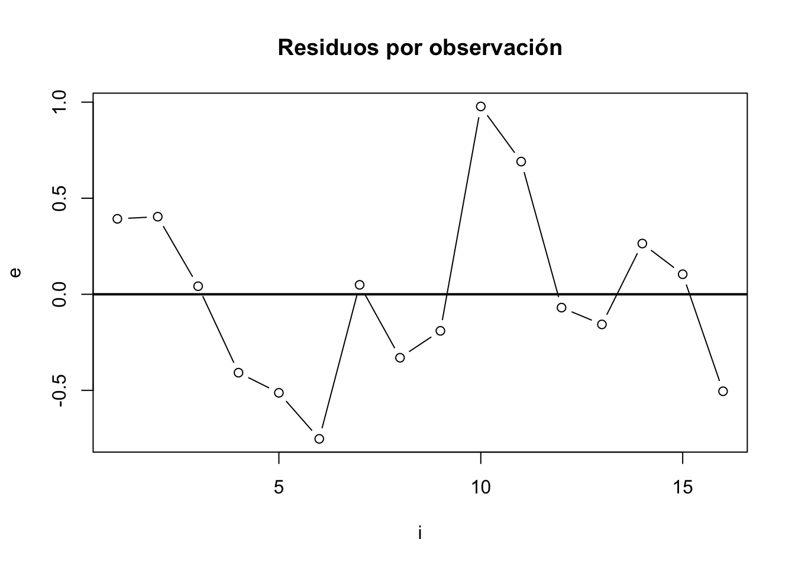
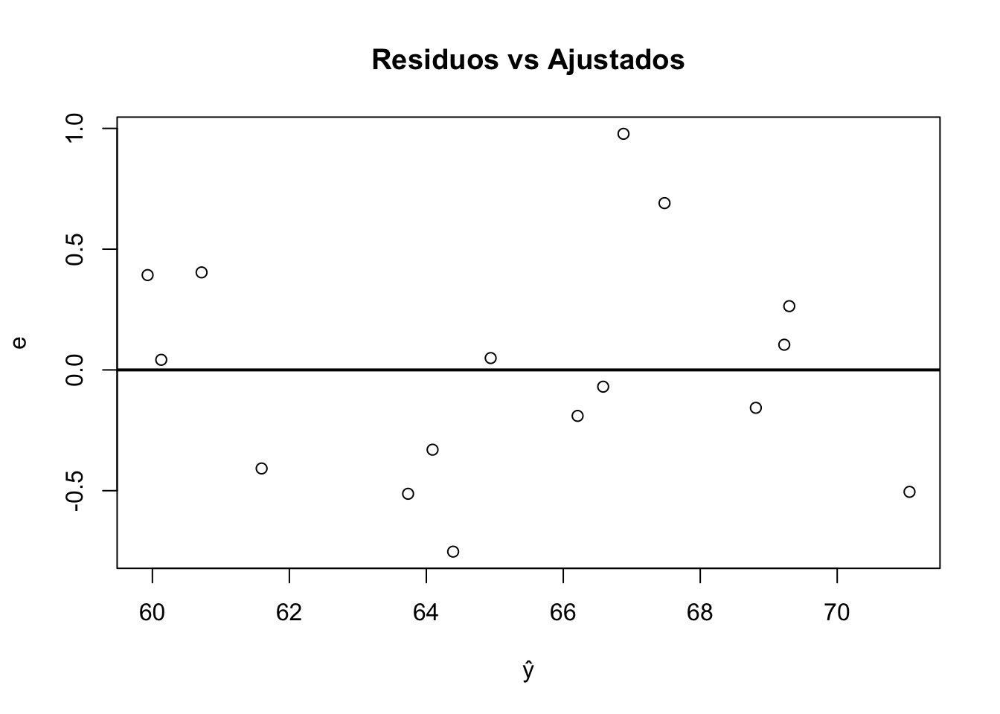
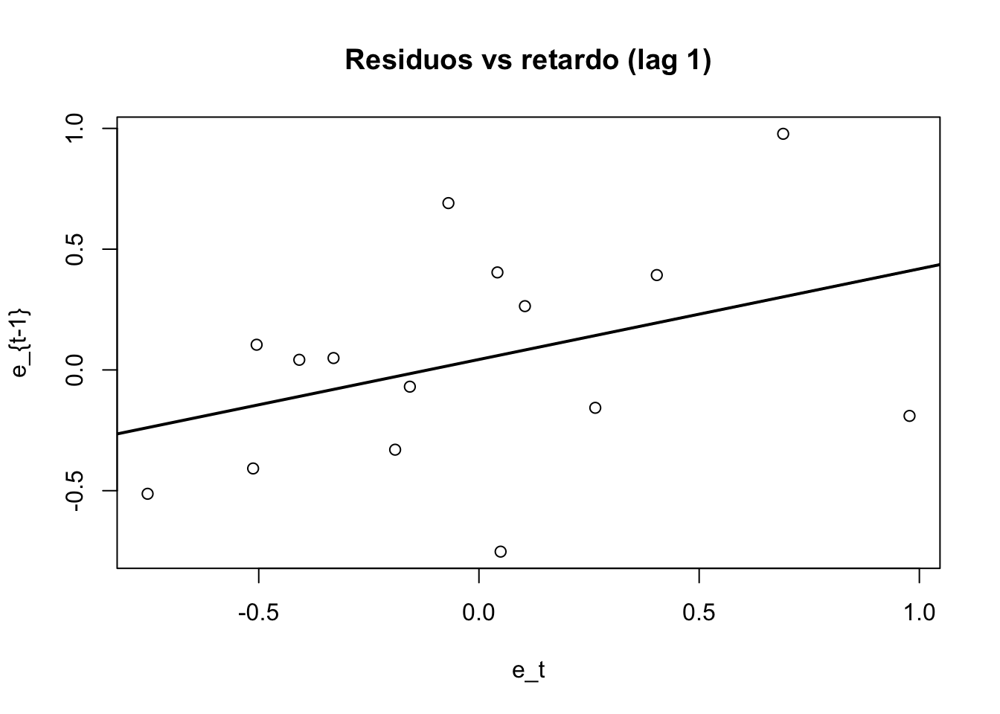

data(longley)
library(lmtest)
library(nortest)
library(car)Objetivo
Ajustar un modelo de regresión lineal múltiple por Mínimos Cuadrados Ordinarios (OLS) y comprobar las hipótesis básicas del modelo (misma lógica que en el post del profesor: estimación → diagnóstico → posibles correcciones).
Trabajaremos con el dataset longley (incluido en R), que se usa como ejemplo por su alta colinealidad.
Preparación
- Estimación del modelo (OLS)
En el ejemplo del profesor se ajusta:
Employed = _0 + _1 GNP.deflator + _2 GNP + _3 Population + u
reg <- lm(Employed ~ GNP.deflator + GNP + Population, data = longley)
summary(reg)
Call:
lm(formula = Employed ~ GNP.deflator + GNP + Population, data = longley)
Residuals:
Min 1Q Median 3Q Max
-0.75233 -0.34965 -0.01369 0.29628 0.97765
Coefficients:
Estimate Std. Error t value Pr(>|t|)
(Intercept) 102.03085 15.77995 6.466 3.09e-05 ***
GNP.deflator -0.14815 0.09851 -1.504 0.158476
GNP 0.08235 0.01631 5.050 0.000285 ***
Population -0.45626 0.14851 -3.072 0.009676 **
---
Signif. codes: 0 '***' 0.001 '**' 0.01 '*' 0.05 '.' 0.1 ' ' 1
Residual standard error: 0.5212 on 12 degrees of freedom
Multiple R-squared: 0.9824, Adjusted R-squared: 0.978
F-statistic: 223 on 3 and 12 DF, p-value: 8.711e-11Qué miro en summary(reg)
Significación individual de coeficientes (t y p-value).
R² y R² ajustado.
Test F de significación conjunta.
Y como extra…
coef(reg) # coeficientes estimados (Intercept) GNP.deflator GNP Population
102.03084850 -0.14815069 0.08234892 -0.45626319 confint(reg) # IC de coeficientes 2.5 % 97.5 %
(Intercept) 67.64929553 136.41240148
GNP.deflator -0.36279525 0.06649387
GNP 0.04681764 0.11788020
Population -0.77983779 -0.13268859summary(reg$residuals) Min. 1st Qu. Median Mean 3rd Qu. Max.
-0.75233 -0.34965 -0.01369 0.00000 0.29628 0.97765 head(reg$fitted.values) # valores ajustados 1947 1948 1949 1950 1951 1952
59.93022 60.71818 60.12905 61.59496 63.73379 64.39133 summary(reg)[[6]] # sigma (error estándar residual)[1] 0.5212146summary(reg)[[8]] # R^2[1] 0.9823793summary(reg)[[9]] # R^2 ajustado[1] 0.97797422) Diagnóstico de hipótesis básicas
2.1 Multicolinealidad
En el temario se proponen 3 vías:
determinante de la matriz de correlaciones (cerca de 0 ⇒ relación lineal alta)
VIF (valores > 10 preocupante)
Número de condición (valores > 30 preocupante)
X <- longley[, c("GNP.deflator", "GNP", "Population")]
det(cor(X)) # determinante de la matriz de correlaciones[1] 0.0002842754vif(reg) # VIFGNP.deflator GNP Population
62.40594 145.06696 58.92490 kappa(model.matrix(reg)) # número de condición (aprox.)[1] 44124.112.2 Heterocedasticidad
En este caso:
métodos gráficos con residuos y residuos^2
tests analíticos (White, Breusch–Pagan, Goldfeld–Quandt) con lmtest
e <- reg$residuals
e2 <- e^2
plot(e, type = "b", main = "Residuos por observación", ylab = "e", xlab = "i")
abline(h = 0, lwd = 2)
plot(reg$fitted.values, e, main = "Residuos vs Ajustados", xlab = "ŷ", ylab = "e")
abline(h = 0, lwd = 2)
decision <- function(p, alpha = 0.05, h0 = "H0") {
if (is.na(p)) return("p-value NA")
if (p < alpha) paste("Rechazo", h0, "(p <", alpha, ")")
else paste("No rechazo", h0, "(p ≥", alpha, ")")
}Breusch–Pagan y Goldfeld–Quandt (lmtest):
bp <- bptest(reg)
gq <- gqtest(reg, fraction = 1/3, order.by = longley$GNP)
bp
studentized Breusch-Pagan test
data: reg
BP = 4.2476, df = 3, p-value = 0.2359cat(decision(bp$p.value, h0 = "homocedasticidad"), "\n")No rechazo homocedasticidad (p ≥ 0.05 ) gq
Goldfeld-Quandt test
data: reg
GQ = 2042.6, df1 = 2, df2 = 1, p-value = 0.01564
alternative hypothesis: variance increases from segment 1 to 2cat(decision(gq$p.value, h0 = "homocedasticidad"), "\n")Rechazo homocedasticidad (p < 0.05 ) White
# Construcción de términos (cuadrados e interacciones)
GNP.deflator <- longley$GNP.deflator
GNP <- longley$GNP
Population <- longley$Population
aux <- lm(e2 ~ GNP.deflator + GNP + Population +
I(GNP.deflator^2) + I(GNP^2) + I(Population^2) +
I(GNP.deflator*GNP) + I(GNP.deflator*Population) + I(GNP*Population))
R2_aux <- summary(aux)[[8]]
n <- nrow(longley)
stat <- n * R2_aux
df <- summary(aux)[[10]][[2]] # g.l. numerador en el aux (como en el PDF)
crit <- qchisq(0.95, df)
p_white <- pchisq(stat, df = df, lower.tail = FALSE)
c(stat = stat, df = df, p_value = p_white) stat df p_value
5.6267158 9.0000000 0.7766183 cat(decision(p_white, h0 = "homocedasticidad (White)"), "\n")No rechazo homocedasticidad (White) (p ≥ 0.05 ) c(stat = stat, crit = crit) stat crit
5.626716 16.918978 2.3 Autocorrelación
En el temario se detecta:
gráfico de residuos por orden
gráfico residuos vs retardo (lag)
contraste Durbin–Watson (dwtest).
# lag 1 de residuos
e_lag <- e[-length(e)]
e_now <- e[-1]
plot(e_now, e_lag, main = "Residuos vs retardo (lag 1)", xlab = "e_t", ylab = "e_{t-1}")
abline(lm(e_lag ~ e_now), lwd = 2)
dwtest(reg)
Durbin-Watson test
data: reg
DW = 1.1698, p-value = 0.008272
alternative hypothesis: true autocorrelation is greater than 0dw <- dwtest(reg)
dw
Durbin-Watson test
data: reg
DW = 1.1698, p-value = 0.008272
alternative hypothesis: true autocorrelation is greater than 0cat(decision(dw$p.value, h0 = "incorrelación (DW)"), "\n")Rechazo incorrelación (DW) (p < 0.05 ) 2.4 Normalidad de residuos
En el temario se aplican Kolmogorov–Smirnov, Shapiro–Wilk y Lilliefors.
ks.test(e, pnorm, mean(e), sd(e))
Exact one-sample Kolmogorov-Smirnov test
data: e
D = 0.098933, p-value = 0.993
alternative hypothesis: two-sidedshapiro.test(e)
Shapiro-Wilk normality test
data: e
W = 0.97743, p-value = 0.9399lillie.test(e)
Lilliefors (Kolmogorov-Smirnov) normality test
data: e
D = 0.098933, p-value = 0.9446ks <- ks.test(e, pnorm, mean(e), sd(e))
sw <- shapiro.test(e)
lf <- lillie.test(e)
ks; cat(decision(ks$p.value, h0="normalidad (KS)"), "\n")
Exact one-sample Kolmogorov-Smirnov test
data: e
D = 0.098933, p-value = 0.993
alternative hypothesis: two-sidedNo rechazo normalidad (KS) (p ≥ 0.05 ) sw; cat(decision(sw$p.value, h0="normalidad (Shapiro)"), "\n")
Shapiro-Wilk normality test
data: e
W = 0.97743, p-value = 0.9399No rechazo normalidad (Shapiro) (p ≥ 0.05 ) lf; cat(decision(lf$p.value, h0="normalidad (Lilliefors)"), "\n")
Lilliefors (Kolmogorov-Smirnov) normality test
data: e
D = 0.098933, p-value = 0.9446No rechazo normalidad (Lilliefors) (p ≥ 0.05 ) 3) Correcciones (opcional / “por si sale mal”)
3.1 Corrección de heterocedasticidad (WLS)
Si se conoce un patrón de varianza, el profesor muestra el uso de weights= en lm.
reg_wls <- lm(Employed ~ GNP.deflator + GNP + Population, data = longley, weights = GNP)
summary(reg_wls)3.2 Corrección de autocorrelación (Prais–Winsten / Cochrane–Orcutt)
El temario enseña ambas.
# install.packages(c("prais", "orcutt"))
library(prais)
library(orcutt)
reg_pw <- prais_winsten(Employed ~ GNP.deflator + GNP + Population,
data = longley, index = 1:nrow(longley))
summary(reg_pw)
reg_co <- cochrane.orcutt(reg)
summary(reg_co)Conclusiones
Ajustamos el modelo OLS con lm() y leímos summary() como en los ejemplos.
Revisamos hipótesis: multicolinealidad (det/VIF/condición), heterocedasticidad (BP/GQ/White), autocorrelación (DW), normalidad (KS/Shapiro/Lilliefors).
Si hay incumplimientos, dejamos preparadas correcciones típicas (WLS y ajustes por autocorrelación).